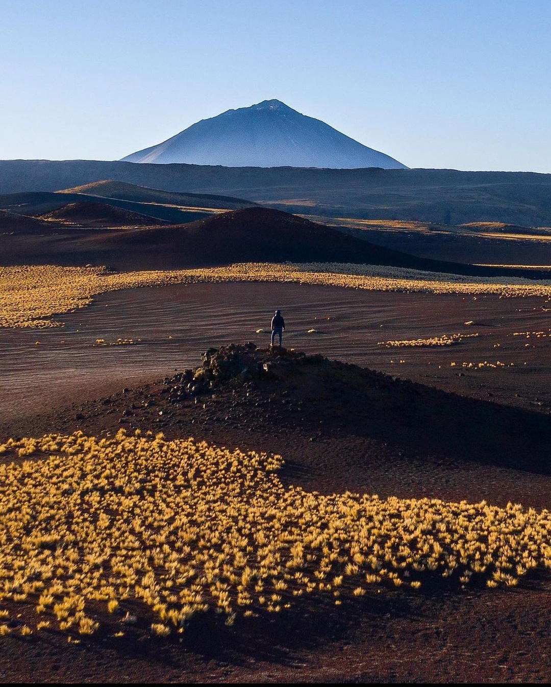
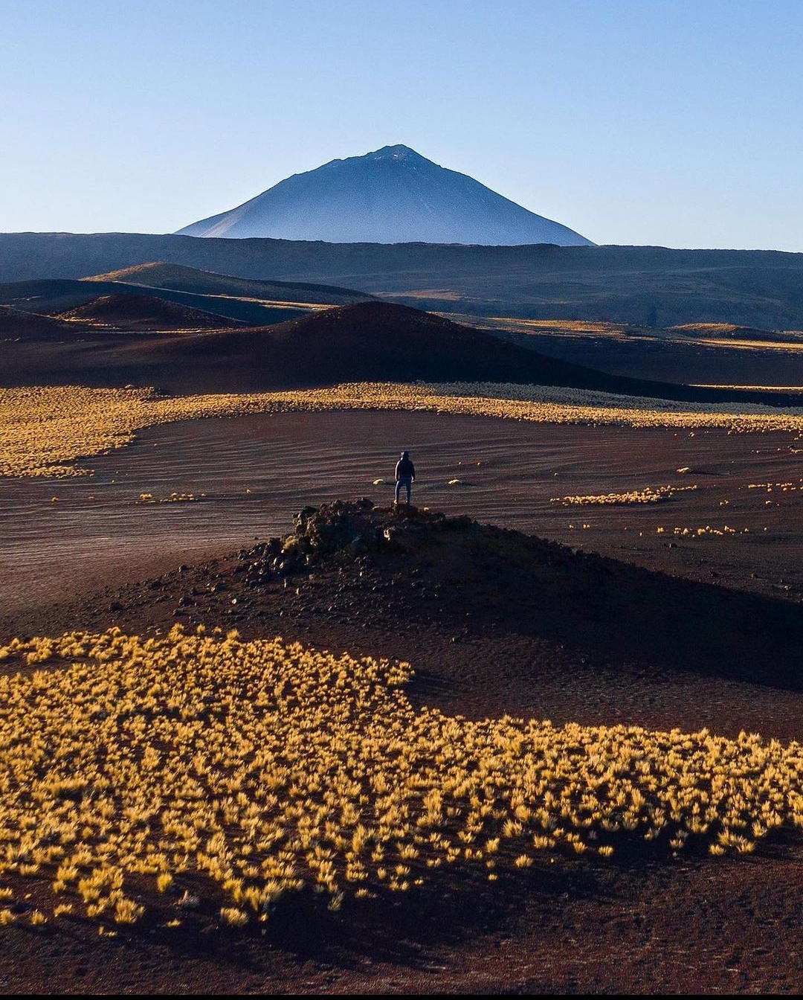

El concepto de región turística se emplea para nombrar a aquel territorio que, por contar con determinadas características especiales, resulta de interés para los turistas. Puede tratarse de una región caracterizada por sus bellezas naturales, su historia o su oferta cultural, por citar algunas posibilidades. Estas ofrecen aire fresco y un entorno completamente diferente a la rutina del día a día, es por esto y por las diferentes razones que podrá apreciar en las siguientes descripciones que Argentina es hoy día el segundo país más visitado de América Latina por turistas de todo el mundo.
Esta región está compuesta por las provincias de Chubut, La Pampa, Neuquén, Río Negro, Santa Cruz y Tierra del Fuego, Antártida e Islas del Atlántico Sur (AIAS).La Cordillera de los Andes hace alarde de todo su esplendor en las provincias patagónicas. Bosques añejos y silenciosos con especies vegetales autóctonas que se extienden a orillas de los espejos de agua cristalina, cumbres de montañas formadas por picos de granito y campos de hielo que derraman sus lenguas glaciarias en lagos azules de belleza excepcional, y una fauna propia, única e increíble que hacen de esta región un verdadero santuario natural, no solo de Argentina sino de todo el mundo. En el extremo sur emerge la gran isla de Tierra del Fuego que procura paso al sorprendente continente helado, la Antártida. Aquí el clima es completamente diferente a la mayoría del continente, debido a que es una de las regiones más grandes y que cubre mayor cantidad de climas y variedad de vegetación y paisajes, ideal para aquellos que no solo buscan aventuras variadas y extremas sino un lugar donde descansar, tener aire puro y simplemente disfrutar de las actividades y lugares por conocer.
El Litoral está formado por las provincias de Chaco, Corrientes, Entre Ríos, Formosa, Misiones y Santa Fe. Es la región de los grandes ríos, del trópico húmedo, de la tierra roja y de la selva virgen cubierta de árboles gigantes, con una flora y fauna únicas en su tipo. La extensa y exuberante riqueza natural de la región siempre es una invitación para conocerla y maravillarse, como también descubrir el importante legado histórico y cultural que posee, desde huellas de diversas etnias aborígenes, hasta el arraigo a las costumbres de los inmigrantes y ruinas arqueológicas que fueron escenario de históricas batallas. Las fiestas tradicionales también ocupan un lugar importante en la agenda del Litoral, como los carnavales de Entre Ríos y Corrientes que son reconocidos internacionalmente por la felicidad que emanan de sus coloridas y elaboradas comparsas. Todo un escenario de belleza que se extiende por parques nacionales, sitios naturales y culturales de reconocimiento mundial, tanto de visitantes como de la UNESCO. Sus principales atractivos turísticos, a su vez, también están relacionados con la pesca en los ríos Paraná y Uruguay, el turismo religioso, los centros termales, las playas, la buena gastronomía y un sinfín de atractivos para descubrir.

La región turística del Norte comprende las Provincias de Catamarca, Jujuy, La Rioja, Salta, Santiago del Estero y Tucumán. Entre las montañas, las quebradas y los valles áridos o subtropicales, el Norte invita a sumergirse en la historia local y a lanzarse a la aventura. Estas seis provincias nos permiten poder conocer sus deslumbrantes fiestas y carnavales, sus comidas típicas, los distinguidos vinos, las grandiosas artesanías y tejidos elaborados con lanas de llamas y vicuñas, como también de sitios naturales reconocidos que deslumbran a cualquier visitante. Esta región posee un importante patrimonio natural, arqueológico y cultural, y donde sus paisajes imponentes brindan una excelente oportunidad para la recreación y el descanso de los turistas que la visiten. La música autóctona de la región es un aspecto clave en la cultura local ya que, en las fiestas, sean populares, tradicionales o religiosas, es el eje primordial. A través de ella se entrelazan danzas, mitos, leyendas, artesanías, costumbres y tradiciones.
Esta región está formada por la Ciudad Autónoma de Buenos Aires (CABA) y la Provincia de Buenos Aires. La ciudad y su área metropolitana conforman una megalópolis que supera los 15 millones de habitantes, es también una de las capitales más lindas y activas de América del Sur y la que mejor resume la variada y heterogénea esencia de “lo argentino”. Aquí conviven una impactante oferta cultural (tango, cines, teatros y un sinfín de museos), una gran variedad de paseos de compras (grandes shoppings, centros comerciales a cielo abierto, ferias de antigüedades y artesanías) y una amplia oferta de opciones para conocer la noche porteña, como bares, restaurantes, discos, shows musicales y mucho más. En la provincia, se puede disfrutar del turismo rural en estancias, de las propuestas del delta del Paraná a pocos kilómetros de la ciudad, ideal para la realizar deportes náuticos y de una gran cantidad de pueblos gastronómicos y culturales. En el interior de la provincia se encuentran varios sistemas serranos, donde se puede visitar decenas de lugares que ofrecen variedad de actividades y deportes vinculados al aire libre. Sobre el mar argentino, se ubican los balnearios atlánticos, que van desde el norte de la costa patagónica hasta el Río de la Plata y cuya alta temporada transcurre de diciembre a marzo.

La región turística de Cuyo es comprendida por las provincias de Mendoza, San Juan y San Luis. Cuyo se encuentra sobre la majestuosa e imponente Cordillera de los Andes y extiende sus límites hasta la parte más al sur de las sierras pampeanas. Con una mezcla única de climas, paisajes de alta montaña, ríos caudalosos, especies autóctonas y pueblos originarios, esta región se caracteriza por su intensa actividad económica, dotada de fáciles accesos terrestres, servicios de transportes, aeropuertos nacionales e internacionales e infraestructura turística. En ella, el turista puede realizar diversas actividades relacionadas con la historia, la tradición y la naturaleza. Debido a su clima y las riquezas de su tierra, Cuyo es sinónimo de salud, de bienestar y fundamentalmente, del buen vino, ya que aquí existe una de las producciones más importantes de Sudamérica en donde los viñedos, bodegas y paseos guiados son los más buscados por visitantes de todo el mundo. También, muchos visitan esta región para practicar deportes extremos como el parapente, rafting, rápidos en los ríos, senderismo, acampes, paseos a caballo, entre muchísimas otras opciones más.
 

La región turística de Córdoba comprende, justamente, a la Provincia de Córdoba. Cultural y turística, tradicional y vanguardista, manufacturera y artesanal, son palabras que bien pueden definir a esta hermosa provincia, uno de los centros económicos más importantes del país. Esta región se caracteriza por tener un relieve de serranías y un clima apacible donde se combinan tanto paisajes naturales (valles, desiertos, salinas, altas pampas, sierras y quebradas) como sitios y monumentos arquitectónicos de épocas coloniales (pueblos, reliquias históricas y pinturas rupestres). Diseminadas aparecen capillas y estancias del siglo XVII y XVIII entre las cuales se destacan las cinco Estancias Jesuíticas que, en conjunto con La Manzana Jesuítica enclavada en el corazón de la ciudad capital, fueron declaradas Patrimonio de la Humanidad por la UNESCO. Por último y no menos importante, esta región se caracteriza por la música (con el cuarteto) y la gastronomía con productos típicos como quesos, dulces, cervezas, vinos, entre otros.